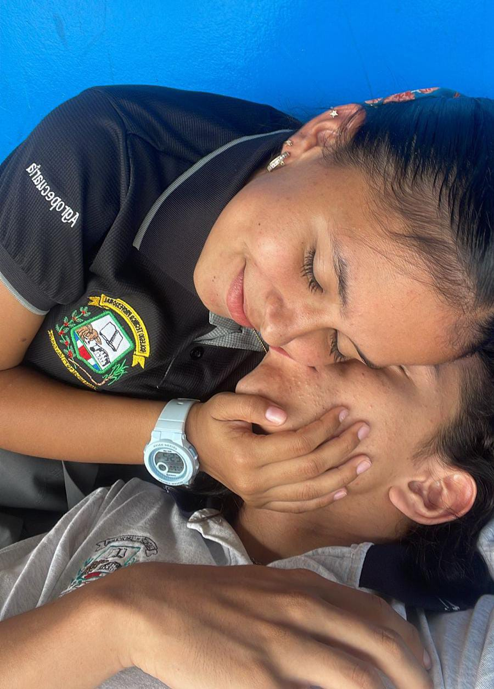

A veces amar también significa saber detenerse, respirar y comprender. Este 14 de febrero no busco respuestas, ni promesas, ni apresurar lo que necesita sanar. Solo quiero desearte calma en tu proceso y recordarte que lo que vivimos fue real, profundo y transformador para mí. Ambos cometimos errores. Nos equivocamos, nos dolimos, aprendimos. Pero cada cosa que vivimos, incluso lo difícil, nos formó. La madurez que hoy tengo nació de lo que atravesamos juntos, de lo que entendí cuando miré hacia adentro y asumí mi parte. Lo nuestro nunca fue algo superficial. Nos conocemos más allá del cuerpo, más allá de lo evidente. Hemos completado frases, hemos dicho lo mismo al mismo tiempo, los pedos que nos tirábamos estando a solas jajaja… y esos detalles siempre me confirmaron la conexión tan fuerte y especial que existe entre nosotros. Mi amor por ti es sincero, es fuerte y es puro. No nace desde la necesidad, sino desde la elección. Te elijo porque te admiro, porque me inspiras, porque contigo aprendí lo que significa amar de verdad, fuiste mi primera vez en muchas cosas... Mi primer y unico amor. No escribo esto para presionarte. Lo escribo porque lo que siento merece ser dicho con honestidad. Sé que lo nuestro no fue casualidad. Fue conexión, fue elección y fue amor. Y cuando llegue el momento correcto, quiero que volvamos a mirarnos desde la calma y construir algo aún más fuerte que antes. Gracias por lo que fuimos, por lo que somos y por esa conexión que, pase lo que pase, siempre será parte de mí. “Siempre voy a creer en lo que somos” 🤍🤍🤍🤍🤍🤍
Esta canción marcó un momento muy especial en nuestra historia. Hoy la comparto desde la calma, porque lo que siento por ti no es impulso, es certeza. Sin prisa. Sin presión. Solo verdad. ❤️🩹